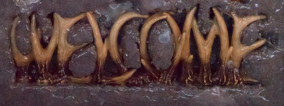

Discograpy (with pictures)

HARD AS FUCK (1990) [Kranial]
* World Is A Fuck
* I am trash man
* 410,757,864,530 DEAD COPS
DOG [Kranial]
* Dog
* Other Antagonist
* Horrorfactor
* Xiticix Queen
FUCKED UP BED (1993) [Skeletal]
* Only Half Of Us Are Humans
* Poison Caused Nausea
* Fucked Up Bed
* I’m Damaged
* Hold You By Your Pretty Hair
* Insectlike Humanoid
* Monster Is Evil
* Hunt In Small Packs
NO REASON TO (LIVE) (1994) [Skeletal] -- Malkon leaves the band because he's playing too fast and too many notes (extreme carpal tunnel)
* Dog
* I’m Damaged
* Only Half of Us Are Humans
* Fucked Up Bed
* Breath Without Air
* Repulsed
* Xiticix Queen
* Hunt In Small Packs
SLIME MAN (1995) [Whoresnest] -- sans Malkon, dude from Head Decapitators -HEAD ON-
* Metamorphosis Of Self Into Insect
* Symbols Of Goodness And Purity Invoke Fear
* Wood
* 18ft Tall
* Some Stabbing Kills
* Familiarize Yourself With Being Cold
* Blak Market
* The Scrambler
* November Rain (written by Axl Rose)
* Slime Man
KARTRIDGE GREY b-sides (1995) [Whoresnest]
* Bacterial MacroDynasty
* Porphyria
* hiding in vents
* CompuDrugDispenser
* Cold Seepage
* Proteus
* allographs
* duplication of effort
* Orixá
* Experiments in the Revival of Organisms
* cucurbits
* Mamzmorra del Suspension
* Roko’s basilisk
* Anus
* ruination
* The Ice Castle of Krannalith
* Ruins2Ruins
* fucked up faces
* the gremlins behaved
* gambling in our blood
Leonard Crakvicks (Flow Kranium Solo) - Business Man / Terminator Creator and Breakslime (about Krank) 12" [LARRY'S WORLD]
KONFRONTATION (1996) [LARRY'S WORLD] -- Malkon returns. "Insanitizer" is a huge single. "Always kill in pairs of two. Nothing left for me to do. One for me, one for you." Two weeks later HEAD ON has a psychotic break and kills 2 people at the Mall in front of Cindy's Donuts and Garden Display. One of his victims is Paco, the other is unidentified. HEAD ON gives "I Deserve" speech at his arraignment.
* We Don’t Agree
* Refridgeration Chamber
* Cost of Smoke
* Insanitizer
* To Build A Fire
* respectfully decline
* Injury Forms (additional hand and arm)
* You’re A Typical Slave-Borg
* Konfrontation
* Anasthesia
TROLL THE RUINS (1997) [LARRY'S WORLD] Includes the single "Unidentified"
* Unidentified
* There Is No Man, There Is No House
* fractals in the limousine
* Stranger
* Limitations And Penalties
* patronyms
* If It Is
* King Dumb
* Absorber
* Garden Display Murders
* you’re like a disease
BIOCONFUSED (1998) [LARRY'S WORLD]
* Bleeder Entries
* Bioconfused
* Expose The Freak
* Zodiac
* Trapped In Ice
* glob linking duct
* mutatis mutandi
* I Can Wait
* Inhuman Father (Written by Malkon Flex)
* 4224 (Frozen Klone)
FRIDGEHEAD (Previously Unreleased) (1999) [LARRY'S WORLD] -- Malkon crashes his motorcycle...
* I’m An Actor
* Offal
* Lizzard
* Kieth
* Oozing
* Horrible Way To Die
* Oracle
* Garbins Vomit Pool
* Meat For The Dog
* Infant Network
* I’m Absolved
PLATITUDES (2015) [KONFRONTATION]
* Looking Glass
* Apparitions
_files/bbuttn.html)
Member of Music HyperBanner